knitr::include_graphics("./figures/met-ISA-atmosphere.jpg")
flight instruments
navigation instruments
other instruments/systems
Temperature probe of an aircraft measure the Total Air Temperature (TAT).
TAT includes friction and ram rise.
TAT >= SAT
At lower speeds, OAT (SAT) ~ TAT, as friction and ram rise does not play a role.
Speed (of faster) aircraft create temperature measurement problem. Measurement results are distorted by frictional heating, ditto on static air accelerated with aircraft and used to measure temperature.
increase in sensed temperature is called * kinetic heating (or ram rise) *. The kinetic heating/ram rise in temperature is due to adiabatic compression.
TAT = SAT (OAT) + ram rise
The (total) conversion of kinetic energy to heat can be calculated:
\[TAT = SAT * (1 + 0.2 M^2) \] Temperatures SAT/TAT in Kelvin K (!= Celsius or Fahrenheit)
Conversion loss as there is no perfect thermodynamic conversion. –> conversion factor, i.e., recovery factor K, K < 1. Typical values K =0.9.
\[TAT = SAT * (1 + 0.2 *K * M^2) \] \[SAT (or\ OAT) = \frac{TAT}{1 + 0.2 * K * M^2}\]
Example: Mach number 0.7, measured impact temp = -48deg C, recovery factor K of 0.85.
TAT in Kelvin: -48C + 273 = 225 K \(M^2\) = 0.7 * 0.7 = 0.49
\[SAT = \frac{255}{1 + 0.2 * 0.85 * 0.49} = \frac{255}{1 + 0.0833} = 208 K\] Kelvin to Celcius: 208 - 273 - -65degC
Higher speed “rams” air into thermometer and gets compressed (a bit) causing increase in temperature: \[Ram\ rise = SAT * 0.2 * M^2\]

stationary aircraft (on ground) acted on from all directions by ambient air pressure or static pressure. Statis pressure is the atmospheric pressure.
movement through air “adds” dynamic pressure. Dynamic pressure is the kinetic energy changed to pressure energy/ The dynamic pressure is proportional to aircraft’s speed:
\[dynamic\ pressure = 1/2 * \rho * v^2\]
\(\rho\) air density
\(v\) true velocity of aircraft
Dynamic pressure important as it represents the pressure of air flowing over the aircraft. Thus, relates to lift it creates and drag it experiencies. ~ flying characteristics of an aircraft.
A sensing system detecting the total pressure on the front of the aircraft.
Total pressure = dynamic pressure (movement) + static pressure (background).
To find dynamic pressure = need to separately sense the static (ambient background) pressure.
Bernoulli principle ==> total pressure = dynamic + static pressure ==> dynamic pressure = total pressure - static pressure
Separate measurement of static pressure also useful for height and rate of vertical change (i.e., climb and descent).
Static pressure vents or ports. Holes = vents are placed at right angle to the airflow. This avoids detecting the dynamic pressure.
Some smaller aeroplane (not having multiple sensors) have a selectable standby static source inside the cabin. Unpressurised cabin ~ slightly lower (static) pressure due to aerodynamic suction.
combined pressure heads: measuring both, static and pitot/total pressure. “mast” to ensure sensors are outside boundary layer of aircraft skin. Can have heater element = avoid blockage from icing, drain hole to exit water entering the tube.
Any error in detecting static pressure will give false instrument indications.
The sum total of all such errors is called position error (ex pressure error).
position error:
configuration: typically static sources are sited as far as possibly to be error free ~ some small remaining error which change with aircraft true airspeed and configuration (flaps, gears), and with angle of attack.
Such errors are established in flight testing = thus known ==> calibration cards, or in modern systems programmed out in the air data computer.
Note: standby instruments are not fed through ADC and - even in modern aircraft - have uncorrected position errors.
maneuver: rolling, pitching, or yawing, including random gusts may introduce transient and unpredictable static pressure errors. These can therefore not be programmed out with ADC.
Extreme rolling/pitching unlike with transport aircraft.
Errors related to yawing may be minimised by sitting static ports on both sides of fuselage.
good info: https://aerotoolbox.com/airspeed-indicator/
Your airspeed indicator, put simply, is a scale that measures the difference between the static pressure from your static ports, and the ram pressure (dynamic + static) from your pitot tube The static pressures cancel each other out, and you’re left with dynamic pressure.
The pressure altimeter measures the “barometric” difference in height between pressure levels.
calibration based on standard atmosphere
- (mean) sea level pressure: 1013.25 hPa - sea level density: 1225 g/m^3 - sea level temperature: 15 C - temperature reduces with increasing altitude at 1.98 C per 1000ft + up to 36 090 ft at -56.6C staying constant to + 65617 ft then rising at 3C per 1000ft
knitr::include_graphics("./figures/met-ISA-atmosphere.jpg")
detection of change in static air pressure
Simple altimeter: - aneroid capsule connected to rotating needle
- capsule expands with decreasing ambient air preassure –> higher altitude - subscale allows adjustment to different datum pressure settings (e.g. QNH, standard, …) - rate of pressure decrease with increasing height is not constant ==> non-linear linkage - read-out only correct for ISA condistions
Pressure in aneroid capsule: vacuum (or a very low pressure).
Pressure in casing: static pressure.

Sensitive altimeters: increased sensitivity by stack of 2 or more capsules (~ increased movement/change); vibrators to overceom static friction; more complex gearing allows to use 3 pointers (10000ft, 1000ft, and 100ft); others use drum or digital display with one pointer.
more modern variants: vibrator and pressure setting digitiser, both require electrical supply; digitised information can be used by transponder (automatic transmission)
servo-assisted altimeters: movement transmitted to a pivoted bar, i.e., the I-bar
capsule stack (increased sensitivity) –> E/I-bar assembly sending signal to servo motor –> complex gearing –> digitiser for transmission of 1013hPa based ALT to transponder
ADC-driven altimeters: fourth generation system using static ambient pressure fed to ADC to calculate altitude referenced to both 1013hPa and selected subscale setting –> transponder , other feed to servo driven instrument or EFIS
accuracy requirements ICAO PANS-OPS (dependent on test/indication range):
QFE/QNH accurately -/+ 20m or 60ft for range of 0-9000m or 0-30000ft
or 25m or 80ft for 0-15000m or 0-50000ft
Position Error: position error can affect altimeter readings. Can be minimised by good design. Error varies with TAS and angle of attack.
Instrument Error: friction in the gearing
hysteresis error: Any capsule based system will encounter problem that the aneroid capsulses themselves are not perfectly elastic and ‘reluctant’ to change shape after being at one pressure for a period of time.
change of sea level pressure from the datum set on altimeter
==> resetting subscale to correct value


HIGH pressure to low pressuer - altimeter over-reads; true alt decreases, while shown altitude stay constant HIGH termp to lower temperature - altimeter over-reads, true alt decreases
high-low-high: flying from high pressure/temperature to low pressure/temperature … altimeter show high(er than you are)
ditto for low-high-low
high-to-low, carful go! Im Winter sind the Berge höher@
Temperature error correnction tables
temp error in when flying in warm air –> alt under-read … no issue, as you tend to climb.
flying in cold air mass and at low altitudes! ~ landing!
Accordingly, temperature corrections must be applied to decision heights/altitudes, step down fixes, and even terminal minimum safe altitudes in temperatures of ISA -15C or below!
Error of line blockage (static line blocked) - pressure cannot change == no altitude change when climbing or descending
Fracture of static line - ‘cabin pressure’ will be measured rather than aircraft altitude.
In case of wrong altimeter reading - GPS could serve as alternative.
Caution: 4 satelites needed for position fix including altitude. Without some form of GPS augmentation, GPS are not as accurate as pressure systems/instruments. GPS altitude error 1.5-3 times higher than positional error. Anecdotal evidence from mountaineers ~ up to 400ft.
The air mass is not exactly ISA when Altimeter reads zero with QNH ~ you are not exactly at sea level.
In cold air you will be above MSL. In warm air you will be below it.
The QNH and actual sea level pressure (QFF) will only be the same if the ambient conditions are - in fact - ISA.
The standard QNH is 1013.25 hPa or 29.92 in (inches of mercury).
This setting makes the altimeter read a pressure altitude of Flight Level.
This setting is used for traffic above the “transition level”.
Exam questions is about working out difference between levels. Sketch - biggest number at bottom (highest pressure level). Then work with 30ft per hPA difference. 30ft per hPa difference
\[True \altitude = indicated\ altitude\ (QNH) + Temp\ correction\] \[ Temp\ correction = 0.004 * ISA\ deviation * height\ air\ column\ ac&station\] OAT = ISA - 10C, ISA deviation = OAT - ISA = -10C
station to be assumed at MSL!!! (not given)
==> height 9500ft
Temp correction = 0.004 * (-10) * 9500 = -380ft
True altitude = 9500ft + (-380ft) = 9120ft
Aircraft performance is dependent on density altitude.
Density altitude is the altitude corrected for temperature.
In other words, the altitude in ISA which gives you the same air density as the prevailing non-ISA combination of temperature and pressure altitude.
To calculate density altitude
\[density\ altitude = pressure\ altitude + (120 * ISA\ deviation)\] For example:
FL100 –> 10 000ft OAT = -15C ==> -20 DA = 10 000ft + (120 * -20ft) = 10000ft - 2400ft = 7600ft
VSI records the rate of change of static pressure, and displays it as a rate of climb/descent.
Instrument consists of capsule fed with static pressure. The case is also fed with static pressure.
Static feed to case is passed through a very small gap, the metering unit.
If the aircraft changes its altitude, the capsule reacts immediately whilst the pressure change in the case is slower.
The differential pressure is maintained as long as the aircraft continues to climb or descend. But once level, the pressure equalises and the rate of climb or descend returns to zero.
Key component: metering unit. Metering unit uses a “choke” directing the air through both a capillary tube and a “knife edge orifice”.
instantaneous VSis simple VSI will not show rate of climb or descent immediately. There is time lag in indication while pressure difference between capsule and case builds up.
The IVSI counters this by including in the static line two weights in dashpots central with springs … causing immediate differenial pressure because of the inertia as aircraft enters climb/descend.
Dashpots are sometimes called “accelerometers”.
Steep turns: IVSI will initially show a climb - stabilise - descent on rollout.
Do not trust IVSI when turns > 40 degrees or changing load factor in turn.
Other systems for vertical speed
In practice, modern transport aircraft will use one of the two electronic systems driven by ADC or IRS
instrument error - can be present. Can be largely compensated for with an adjusting screw that zeroes the reading.
lag - the basic VSI design sees a lag before a rate of climb or descent is indicated. This may take sometimes up to several seconds. IVSI overcomes this. Modern inertial systems do not suffer from this error.
static errors - error in the absolute value of static pressure produces NO error. However, a change in static pressure when none is due will give a false indicator of climb or descent.
The pressure driven instrument is susceptible to maneuver errors, particularly during take-off and go-around, and in turbulence.
static blockage will cause the pressure driven instruments read zero in all circumstances.
static leak to the pressure cabin will ause the instrument to read cabin rate of climb and descent.
On start-up, all VSIs should read zero.
cool explanation: flight-club: https://www.youtube.com/watch?v=gZBzs2b2kJU https://flight-club.com.au/
pUd pOc sOd sUc
sOd - is static is blocked in descent, the airspeed indicator will Overread
PUDSUC POCSOD
pUd == pitot blocked in descent - ASI under-reads SUC == stqtic blocked in Climb - ASI under-reads
indicated airspeed ~ reference for handling the aircraft
true airspeed ~ determine how far we fly in a given time –> navigation
dynamic pressure = basic measure of airspeed
airspeed indicator are calibrated to read correctly at MSL under ISA conditions.
at height/altitude, air density decreases –> same dynamic pressure reflects now a higher true airspeed (air is thinner ~ for same pressure aircraft needs to move faster).
The same applies if the air is warmer than standard (warm air is thinner ~ for same pressure we have to move faster)
\[dynamic\ pressure = \frac{1}{2} * \rho * v^2\] If \(\rho\) air density reduces, velocity \(v\) must increase for the same dynamic pressure.
Other unit of airspeed: speed of the aircraft as a portion of the speed of sound –> Mach or Mach number
Knowledge of mach number important, because if aircraft approaches the speed of sound, the airflow around the aircraft changes (starting of shock waves). If aircraft is not designed for supersonic flights, this can have an impact on its stability, required extremes of control movements, and loss of control.
Aircraft approaching speed of sound is marked by airframe buffeting.
IAS at low speeds; mach number at high speeds.
TAS to be calculated by pilot or aircraft computers.
speed of sound:
In the Earth’s atmosphere, the chief factor affecting the speed of sound is the temperature.
Earth’s atmosphere, the speed of sound is influenced by factors such as:
Temperature (the main factor) Humidity Altitude/Pressure The speed of sound in the atmosphere is calculated using the following formula:
V_sound = 643.855 x (T / 273.15)^0.5
Where:
v_sound is the speed of sound in knots. T is the air temperature in Kelvin. 643.855 is a constant used to calculate the speed of sound in knots.
Celsius to Kelvin: K = °C + 273.15 ==> -40 + 273.15 = 233.15 ==> 233.15 / 273.15 = 0.85 ~ 85 / 100 ~ (81 = 9^2) (85/100)^0.5 = 9/10 = 0.9
earliest measurement of dynamic pressure ~ flat plate attached to wing –> deflected plate (spring) –> scale indicating airspeed according to deflection.
Calibrated under ISA conditions: IAS correct at sea level.
(light) aircraft: feeding of both, static and dynamic pressure to ASI.
pressured sealed case supplied with static pressure.
inside the sealed case a capsule is supplied with dynamic pressure.
With increasing airspeed the dynamic air pressure increases –> capsule expands –> mechanical link indicates airspeed (~ difference beteen dynamic and static pressure).
calibration: IAS at MSL under ISA == TAS.
Potential inaccuracy due to temperature effect on linkage. Potential bi-metal strips to reduce expansion/contraction.
Modern (and larger) aircraft feed the pitot and static pressure lines to an Air Data Computer –> electrical signal –> servo-driven mechanical display or EFIS screen.
Airspeed can be calculated from the pressures using formulae by Saint-Vernant.
== calibrated airspeed CAS
Any instrument subject to errors: sensor errors, mechanical inaccuracies or issues with design.
ASI subject to all
IAS = dynamic pressure reading corrected for instrument and position errors is called CAS.
Aircraft without ADC may have an ASI correction table for different configuations to convert from IAS to CAS.
old term: Rectified Airspeed RAS.
All large aircraft display CAS on the ASI as a primary reading. Thus, IAS = CAS and no instrument or position errors need to be applied to the reading.
EFIS shows CAS!
In case of increasing speeds > 0.3/0.4M air starts to behave as a compressible fluid –> “compressed” in pitot tube.
This causes the dynamic pressure to be greater than it should be. Accordingly, CAS calculated from \(1/2 *\rho *v^2\) over-reads. = compressibility error.
compressibility corrections are not required for ADC calculated speeds (Saint Venents formulae ~ assuming air is a compressible fluid).
CAS corrected for compressibility is Equivalent Air Speed EAS.
The correction is always a reduction, as compressibility causes the calculated CAS to be too high.
The threshold as of which compressibility needs to be taken into account is approximate. Compressibility is a gradual increasing factor, and insignificant in the beginning (lower speeds).
(FAA) compressibility becomes significant at/above 200kt CAS and at/above 10 000ft ~ equating to around M0.36 in ISA.
Most navigation computers apply compressibility correction not below 300kt TAS ~ M0.45 at MSL.
knitr::include_graphics("./figures/inst-airspeed-corrections.png")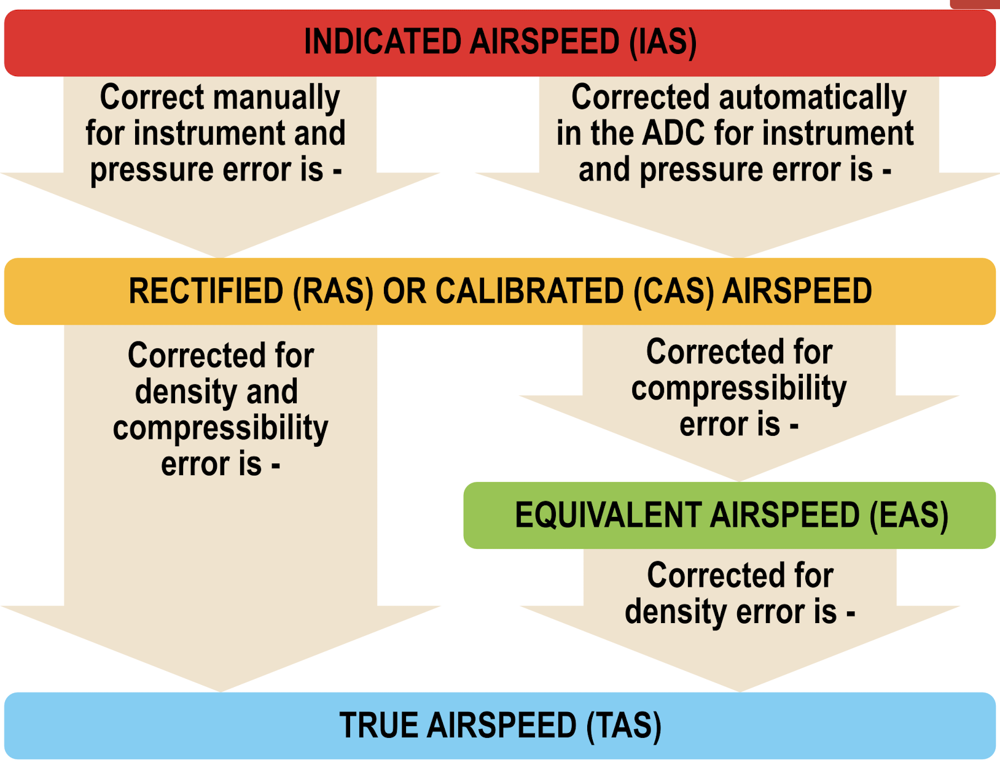
check for math behind: https://aerotoolbox.com/airspeed-conversions/
\[TAS = IAS + IAS * (\frac{2}{100} * \frac{ALT}{1000})\]
ICE T and the Pussy Cat Dolls (PCD)
(ICE-T): IAS CAS EAS TAS (PCD) -> Pressure -> compressiblity -> density Position
TAS can be calculated from CAS, if you know the air pressure and temperature.
Pressure is defined by the pressure altitude of the aircraft.
conversion from CAS to EAS requires knowledge of Mach number (M = f(CAS) + pressure altitude): CAS – PA (\(Z_p\)) –> EAS
conversion from EAS to TAS requires knowledge of air density (or density altitude)
EAS – DA (\(Z_d\)) –> TAS
knitr::include_graphics("./figures/inst-ASI-pitotstatic.png")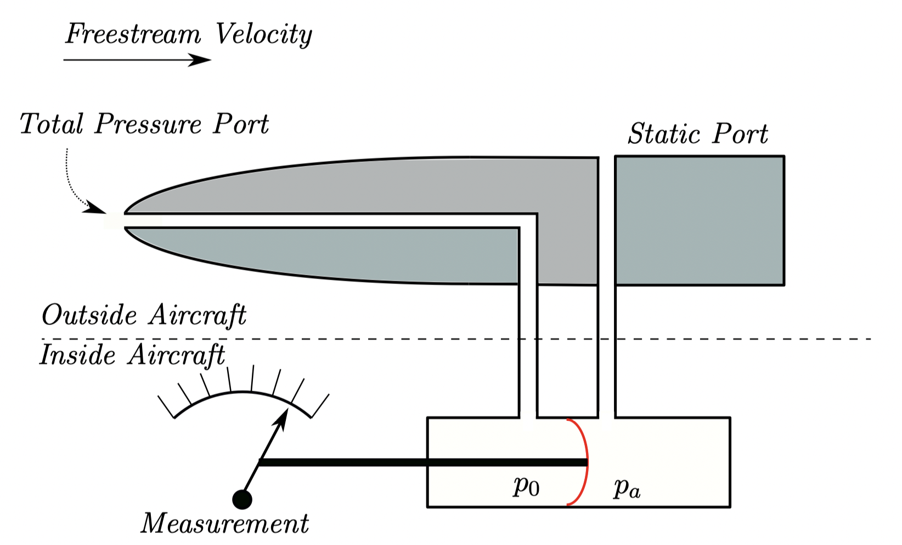
https://www.studyaircrafts.com/compass-system
A compass is an instrument designed to indicate direction on the surface of the earth, relative to some known datum. The magnetic compass works on the principle that a freely suspended magnet will align itself with the earth’s magnetic field such that one end will point toward the north magnetic pole.
The purpose of a magnetic ‘steering’ compass in an aircraft is to indicate heading, the direction in which the aircraft is pointing. Magnetic influences - iron/steel components, electric currents - distort the earth’s field so that the compass magnet assembly deviates from the magnetic meridian. This is called compass deviation.
It is mandatory that all civil aircraft must carry such a compass and in all but light general aviation aircraft it serves as a standby compass.
Aircraft manufacturing –> magnetisation; aircraft degaussing.
Residual magnetism which can influence compass readings.
Other sources: cargo
Distortion of Earth’s magnetic field, or electrical fields (e.g. aircraft equipment)
Deviation experienced by an aircraft is specific to each aircraft and varies with heading and magnetic latitude.
Variation with heading occurs as resultant aircraft fields oppose Earth’s field, both + or -. On which headings this happens is dependent on how deviating fields are aligned with aircraft.
Variation with magnetic latitude is due to horizontal component of Earth’s magnetic field H. It varies in strength depending on where it is detected. At the magnetic equator all the field is in H component, at the poles, the H component is weak to non-existing.
If H is weak, the deviating forces are proportionally stronger. Thus, deviation is greater near the poles and smaller at magnetic equator.
Variation is the difference between true and magnetic direction/headings.
Variation east - magnetic least.
Variation west - magnetic best.
knitr::include_graphics("./figures/inst-magnetic-variation.png")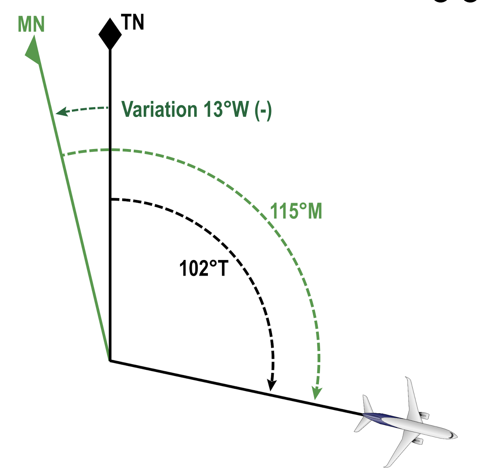
Influence by Earth’s magnetic field. Compass installed in an aircraft distorts, field distorted by aircraft/metal and electrical equipment.
==> deviation from magnetic north == compass north
Deviation is difference between Compass North CN and Magnetic North MN.
deviation east - compass least
deviation west - compass best
Deviation not constant for a given compass. It varies as the aircraft’s magnetic fields interfere with the Earth’s magnetic fields.
Deviation varies with:
Conversion of compass heading to true heading, etc.
Cadbury’s Dairy Milk is Very Tasty compass-deviation-magnetic-variation-True
compass heading: 222 deviation 3W: - 3 magnetic heading: 219 variation 23E: + 23 true heading: 242
Given true heading of 005, VAR 32W, deviation 4E. What is the compass heading
“CaDbury’s Milk is Very Tasty”: C: 033 D: +4 M: 037 V: -32 T: 005
Given compass heading 233, true heading 246, and deviation -3, what is the variation?
C: 233 D: -3 M: 230 V: ==> +16 == VAR 16E T: 246
deviation is detected by means of a compass swing. Done by licensed engineer (not a pilot). –> compass deviation card ~ residual deviation, placed next to compass
Under EASA, CS25 requires main compass to be accurate to -/+5 degrees and standby compass to -/+10 degrees.
check before each flight: clean/clear and not distorted, liquid no bubbles and clean. Accuracy cross check to another compass. Alternative runway (or known) heading. (Note: runway headings are “magnetic”)
C 214 D +6 ==> DEV: 6E M 220 V T 212
procedures for calibrating an aircraft magnetic compass to minimize the effect of aircraft-induced magnetic fields. These procedures are often referred to as “swinging the compass” or a “compass swing.
compass calibration = determining residual deviation –> compass calibration card
3 main gyroscopic instruments found on aircraft are the artificial horizon, the heading indicator, and the turn coordinator. All three use gyroscopic axes to provide a datum from which the aircraft’s orientation can be measured. More advanced systems can also be found on complex aircraft.
All gyroscopic instruments rely on using the gyroscopic axis as a datum.
gyro = turn
skopein = see
angular momentum of a spinning body ~ moment of inertia * rate of rotation
inertia dependent on mass, and distance from spinning axis
gimbals
gyroscopes are usually suspended in a system of frames, i.e., gimbals
==> freedom of movement in a defined number of planes.
a gyro must have at least one gimbal for every axis around which you need to measure movement.
Thus, a turn coordinator measures movement around yaw-axis –> one gimbal;
artificial horizon measures pitch and roll –> two gimbals.
Instrument Name Instrument Shows Gyroscopic Axis Alignment Artificial Horizon Attitude and Bank Vertical to Centre of the Earth Heading Indicator Heading Aircraft Yaw Axis Turn Coordinator Rate of Turn* Aircraft Pitch Axis
(*) turn coordinator does not show bank angle!
degree of freedom = number of axis about which gyro displacement can be measured, i.e., the number of gimbals.
spin axis is not counted as degree of freedom, as gyro displacement cannot be measured around spin axis
note: gyro rotor mounted in two gymbals with two degrees of freedom is free to move in all three planes, i.e., yaw, roll, and pitch.
Note: EASA uses planes of movement rather than degrees of freedom. Thus, one more “plane” than “degree”, because spin axis is considered as well.
In aviation,
vertical (spin axis) or
horizontal (spin axis)
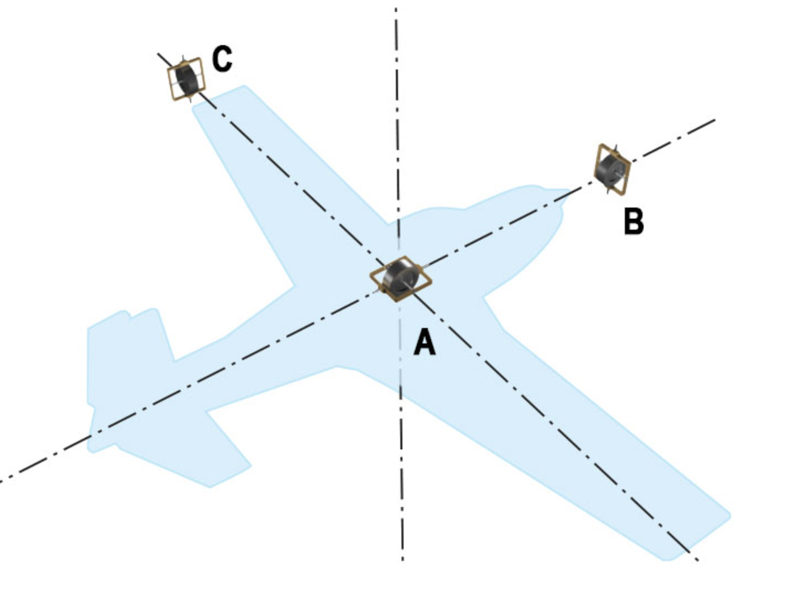
rate gyro - one gimbal –> sense movement in one plane
e.g. rate gyro sensing yaw
gyro axis oriented horizontally across the aircraft
gimbal pivoting around its one degree of freedom –> restraining springs resisting the pivoting and tend to restore neutral position
yawing force twisting the moment in the horizontal plane ….
spring force produces a secondary precession equal to and in the same direction as the yaw.
dependent on orientation, rate gyro can indicate pitch or roll
heading indicator = directional gyro suction to drive attitude and heading indicator
turn - electrical
heading indictor reference magnetic north = dial to configure orientation horizontal gyro - plan perd to horizon - 3 degrees of freedom = regardless of aircraft movement gyro will stay in place
turn - gyro will stay rigid in place, turn left = gyro to right
excessive pituch or bank will stop ~ 85 degrees elect . air suction 55
gyroscopic apparent wander ~ rigid in space ~ earth rotation max at poles, min at equator (aligned with meridian)
dependent on latitude
real gyroscopic wander - wear, friction and imbalance, about 1 degree per hour Real wander (or random wander) of a gyroscope, as opposed to apparent wander, is actual movement of the spin axis caused by engineering imperfections such as friction and unbalance.
practice: adjust HI every 10-15 mins when straight and level (= compass shows correct heading related to magnetic north)
gyromagnetic compass - remote indicating gyro / slaved gyro.
in principle: heading indicator incorporating a “slave gyro” ; automatic alignment
rate gyro –> rate of angular displacement
rate integrating gyro –> rate of displacement and time it was applied for ~ indication of rotational displacement
rate integrating gyros ~ extreme accuracy over a small angular movement
one degree of freedom –> rotatinal movement about one axis
gyro rotor inside a cylinder acting as sole gimbal, free to rotate inside a 2nd cylinder. The outer cylinder is filled with viscous fluid.
issue: cross-coupling
Laser or ring laser gyro (RLG) mainly used in Inertial Reference System IRS
Uses gas discharge laser to generate monochromatic radiation in two directions.; frequenccy difference proportional to input rate ==> measured and converted to digital output signal
issue: Frequency Lock and Dither
RLG issue - frequency lock or lock-in or laser lock.
at low input rates, frequencies of CW and CCW beams are nearly the same ~ lock ~ zero
dither = slow rotation of laser system around input axis –> ensures RLG stays out of lock-in range
INS = 3 RLGs at right angles fixed to aircraft frame
INS measures all rotations about the three axes, giving a very accurate readout of aircraft attitude with reference to a space datum.
benefits: size, lifespan compared to conventional rate sensing or rate integrating gyros
turn indicator and turn coordinator
balance ball ~ in or out of balance ~ too much or too little bank used for rudder deflection
indicator rate of change of aircraft heading = rate of yaw in the plane of the earth horizontal
rate gyro with horizontal axis, one gimbal, and degree of freedom
either air/vacuum driven (suction) or electronically driven
horizontal axis parallel to lateral axis of aircraft (= pitch axis)
when aircraft banks into balanced turn, the gyro precesses in the opposite roll sense in order to keep its axis more or less with the earth horizontal.
bank angle for a given rate of turn is related to the TAS
requires calibration to a specific range of TAS ==> turn indicator calibrated for (e.g.) Cessna will not indicator correctly in (e.g.) a jet;
turn indicator will also not correctly if turn is not balanced because angle of bank would be incorrect.
rotates away from pilot
required angle of bank:
\[angle\ of\ bank = (\frac{TAS}{10}) + 7\]
(typical) turn indicator - one index L or R at rate 1 turn; note showing rate 1 ~ “2min turn”
optional TIs with 2 or 3 rate turn markings
balanced turn = coordinated amount of bank and rudder
too much bank ~ aircraft slipping
too little bank ~ aircraft skidding
straight and level flight ~ gravity keeps ball in center of liquid filled tube = no slip and no skid
ditto for balanced turn
in case of too much or too little bank, the resulting force will not be through the aircraft vertical axis ==> ball displaced
“kick the ball” = more or less rudder in the direction of the ball
Turn Coordinator is a further developed turn indicator.
Gimbal raised at the front by 30 degrees.
Thus, sensitive primarily to yaw, but also slightly to roll ==> begins to indicate turn as soon as aircraft starts to roll into the turn and before yaw rate is established.
Once in steady turn, there is no further roll rate and therefore the instrument only indicates yaw!
Turn coordinator only indicates rate 1 turns accurately in a tight TAS range (about 5% of specific speed), as it indicates/reacts to yaw, roll, and part of pitch.
Direct attitude indicators use an Earth gyro = gyroscope with 2 degrees of freedom (2 gimbals), spin axis maintained in Earth vertical by gravity
Attitude indicator shows aircraft attitude in pitch and roll.
Either driven by air/vacuum (suction) or electrically.
air drives rotor, typically rotates anti-clockwise when viewed from above.
inner gimbal –> horizon bar up/down outer gimbal –> bank angle
gyro remains level, case pitches with horizon bar displaced to show climb or descent
ladder = major pitch attitudes numbered
aircraft symbol (white or yellow) remains fixed to the instrument casing.
bank indications - sky pointers
bank indictor rotates in roll with the rest of the indicator card
first 30 degrees shown in increments of 10 degrees, further indications at 45, 60 and 90 degrees
Air-driven artificial horizons are made pendulous, settle gimbals ina nearly erect position when NOT working = reduces erection time at start-up
once engine has started –> gyro is rotation –> gyro axis tied to Earth vertical
air exhausts at bottom to regulate orientation
same principle, rotate clockwise when viewed from above, gyro tied to Earth vertical
more rigid that air-driven gyros, electric squirrel cage motor higher spin speed, electic erection system & very quick
electrically driven artificial horizons do not suffer from turning and acceleration errors.
…
modern aircraft, instrument driven by servos
signals amplified and set to a processor and then to the display unit: Attitude Diretor Indicator (ADI).
signals from vertical gyro also sent to autopilot and flight director.
information from other systems can be combined in the ADI, e.g. ILS localiser and glide-scope indicator, radio height, airspeed deviation from target and flight directors
advantages of using remote vertical gyro unit over basic instruments are:
Such vertical gyros may be combined with a remote indicating compass system = Attitude and Hearding Reference System (AHRS)
AHRS gyros no longer use 2 defree of greedom to detect attitude but instead use single degree of freedom rate gyros as roll, pitch, and heading sensors combined with accelerometers in all three axes and a magnetic field detector, i.e., flux valve.
most modern AHRS use MEMS gyroscopes, accelerometers and magnetometers on three orthogonal axes.
MEMS smaller, lighter, accuracy, reliability, and cost
AHRS may be combined with an Air Data Computer tp make Air Data and Attidutde Heading Reference System (ADAHRS).
modern aircraft fitted with IRS or ADAHRS take attitude signals from IRS and send them to the EFIS symbol generation fo relectronic display. = Primary Flight Display (PFD).
PFDs can incorporate attitude information as well as airspeed / Mach number, maneuver boundaries, flight direcetors, attitude and autopilot or flight director mode indications
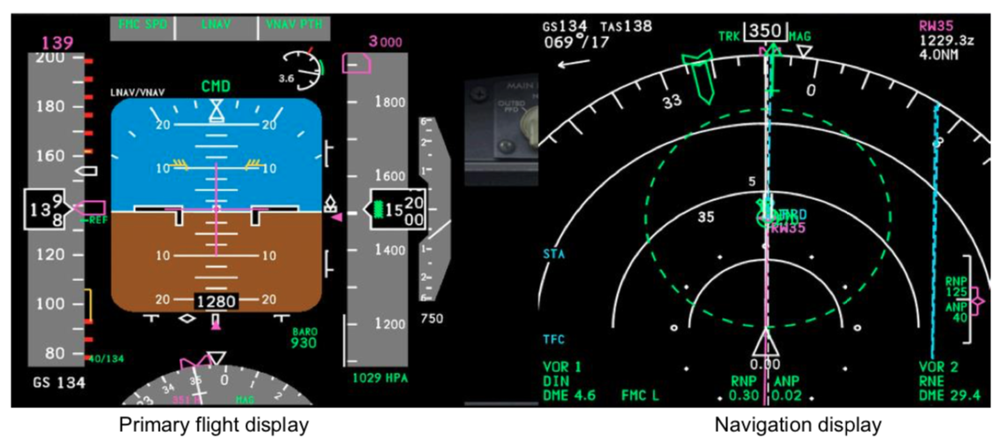
The main characteristic of the Navigation Display is the colour screen and the ability to display different modes and functions : route flown, VOR, AFD, ILS, Weather Radar, TCAS, etc.
apart from attitude, gyros can be used to indicate direction either on their own as a Direction Indicator (DI) or integrated into a compass system.
DI are used as a primary heading reference on light aircraft. DI measure changes in direction relative to the Earth’s surface. such DIsare tied to the horizontal of the aircraft instead.
== tied gyros with horizontal spin axis
two degrees of freedeom ~ two gimbals.
DI driven by air or electricity.
typically air-driven because they are only fitted in simple aircraft and directional gyros incorporated into other systems are typically electrically driven, because they are fitted into slightly more complex aircraft with better electrival supplies.
Directinoal gyros have 2 defrees of freedom and a horizontal spin axis.
Direction indicators fitted into simple aircraft to supplement heading information from a direct reading magnetic compass.
The rigidity of its gyroscope gives steadier heading inforamtion than the compass (compass subject to turning and acceleration error).
A DI cannot be completely on its own. Subject to its own errors of apparent drift.
Apparent drift caused by rotation of the earth and transport wnder.
both instruments are used together. The DI is the primary heading reference, it must be periodically reset to the heading reference from the direct reading compass when aircraft in straight and level flight.
Gimbals give freedom in pitch and roll up to about -/+ 55 degree.
Due to its rigidity the gyroscope will retain its orientation in space. As it turns, the aircraft effectively rotates around the outer gimbal, and indicated heading is read from the scale fixed to the outer gimbal.
The heading scale is normally round the middle of the gimbal.
DI is a tied gyro - which also it is free to move in its gimbals has the spin axis held to the aircraft horizontal.
Air is fed through nozzles mounted on the outer gimbal, itself tied to aircraft horizontal. when the rotor is erect, impinge equally on both sides of the buckets.
on ground whiule taxying: left turn = heading decrease, turn right (clockwise): increase
mechanical ADI is fed attitude data from remote vertical gyro or a referencing platform. But it can be supplied from an IRS.
DI and compass = heading information.
Both have significant errors, but used together they can perform.
Combination of both in one instrument using rigidity of gyro to stabilise the compass in the short terms but to correct for apparent wander with a continous magnetic heading input.
== gyro compasses == remote reading gyro compasses == gyro flux gate compasses
information from VOR or NDB added –> RMI
adds information on deviation from selected VOR/ILS/RNAV tracks.
Deviation remote indicating gyro compass suffers from same potential errors caused by variation in aircraft magnetism as direct reading compases - but at lesser degree due to flux valve placed as far away from disturbing sources/fields.
Deviation correction is achieved by adjusting the electromagnetic fields near the flux valve with permanent magnets.
EASA CS25 requires main comapss system to have accuracy adequate for safe operation of aeroplance. == within 5 degrees for remote indicating compass.
some authorities require residual error less than 1 degree.
–> no compass correction card required.
Acceleration and Turning acceleration on take-off and deceleration on lainding will cause flux valve to swing & some liquid surrounding dampening. Thus, moves from Earth horizontal detecting some vertical Z component == direction distortion.
Steady pitch attitude up to 25 degree from level will produce no error. However, in steady balanced turns the flux detecter will stay level with respect to the aircraft and agins start to pick up Z component of magnet field ~ ditortion.
== various sensors incorporated to detect pitch, bank, and acceleration –> switching off when these parameters exceed limits set in the magnetic monitoring system.
IRS required to maintain a very accurate reading of true north.
Although not a compass, it is used as a heading reference.
The IRS computer will hold a variation map for the world and can display both true and magnetic heading!
CS25 requires accuracy of 1 degree.
In earlier INS, the INS provides true heading for mixing with and stabilising the magnetic heading input from a detector.
Questions
flux detactor detects strength and direction of the Earth’s magnetic fields. The error detector compares the flux valve reading with the ‘null’/North position and expresses the difference –> heading on compass card.
remote indicating compass fitted with free/slave swith. When slave system and system synchronised what is the source of the displayed heading == flux detection unit.
remote indicating compass ~ 2 main parts: indicator = direction gyro until we add input from flux valve/detector.
if switched to slave == only flux; sometimes switch Comp/DG for compass and directional gyro.
DG 2 axes, incapable of self-orientation in an Earth tied position annunciated (slaving loop) DG 2 axes, spin axis horizontal plane by erection system
DG –> 2 errors: apparent wander/Earth rotation and transport wander/drift; no influence of longitudinal accelerations or Earth magnetic field (~ gyro!)
EFIS enhances attitude and navigational data.
PFD errors –> stanby instruments, modern: Integrated Stanby Instrument System (ISIS)
Components
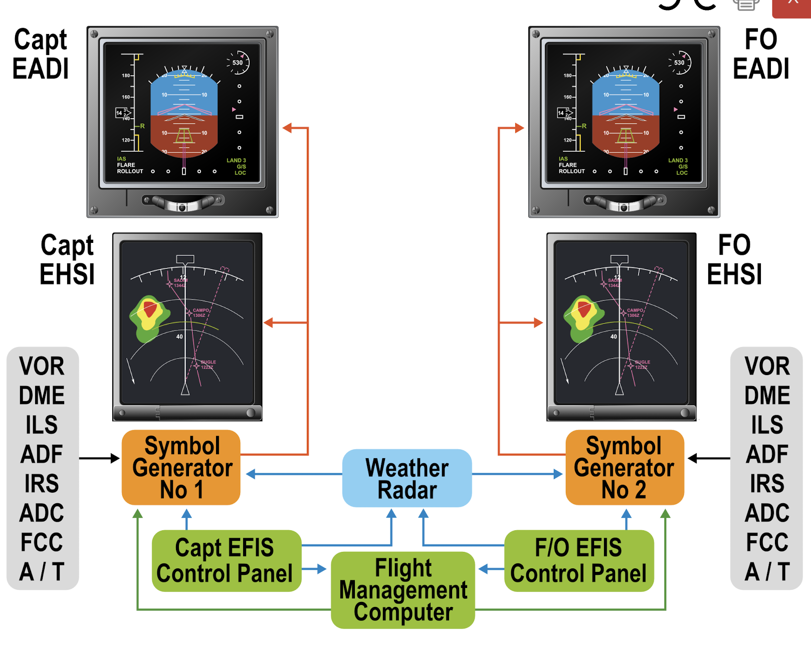
typically 2 SGs, if one fails the remaining supplies both = identical information/display; optional 3rd backup generator
PFD can be switched to ND (or to any other available unit. – EFIS control panel.
EADI/PFD is an electronic version of a sky-pointing ADI
Overlay possible of
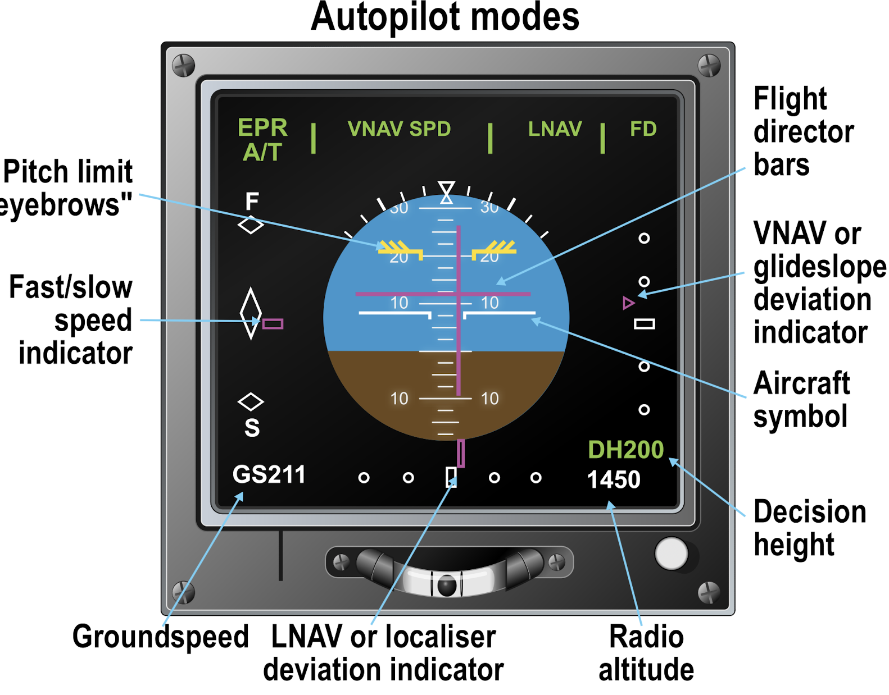 fast/slow indicator shows airspeed error of -/+10kt when autothrottle engaged, acts as throttle director when thrust is manually controlled
Speed tape
speed tape shows calibrated airspeed CAS from air data computer ADC between 45 and 420kt.
overlaid on the moving speed tape are the speeds that are important for handling and performance considerations.
max speed/Mach number: VMO or MMO and high speed buffet boundary
minimum maneuver speed, stick shaker speed
minimum flap retraction speeds are shown as a greed F
landing reference speed VREF as a green R
gear and flap placard speeds are shown in red and black
Note: displays vary - yellow = caution, red and black = limits
decision height and radio height
(in B737) Decision Height DH can be supplemented with a digital or dial readout of the Radio Altitude RA.
RA only active below 2500ft. Between 2500ft and 1000ft, both DH and RA are shown.
Below 1000ft, circular display / traditional analogue dial readout in 100ft increments.
DH bug is displayed in magenta at appropriate height.
below 1000ft circular scale gradually eroased in anti-clockwise direction.
DH + 50ft: aural aleart … increasing rate until selected DH reached & flashing
screenshot Airbus PFD 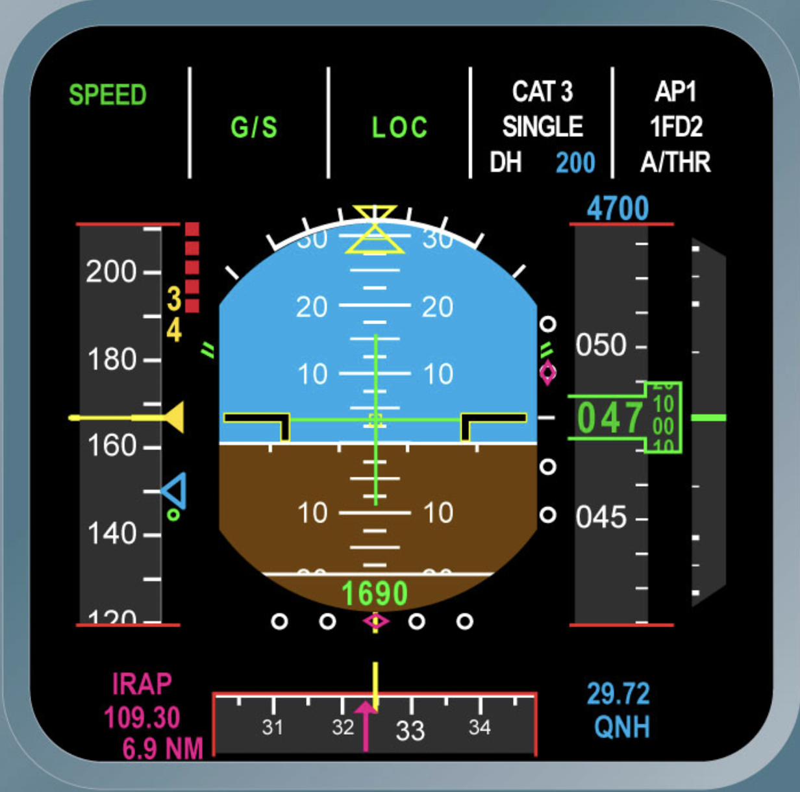
EFIS replace mechanical instruments in modern aircraft.
Focus on B737/77/777 and Airbus equivalents.
Not to be confused / compared with “modern” general aviation aircraft –> e.g. Garmin, Dunon, AvMap
EFIS ==> presentation of attitude and navigational data to flight crew. EFIS uses modern colour graphics and are usually integrated with digital computer-based navigation systems.
EFIS now using Avtice Matrix LCD, good temperature range, lower power consumption, reduced glare (over earlier systems)
To cope with failure in the primary flight display PFD or its inputs standby instruments. Older aircrat use analogue, consisting of AI, ASI, VSI and ALT.
Modern aircraft is an electronic integrated Standby Instrument System (ISIS).
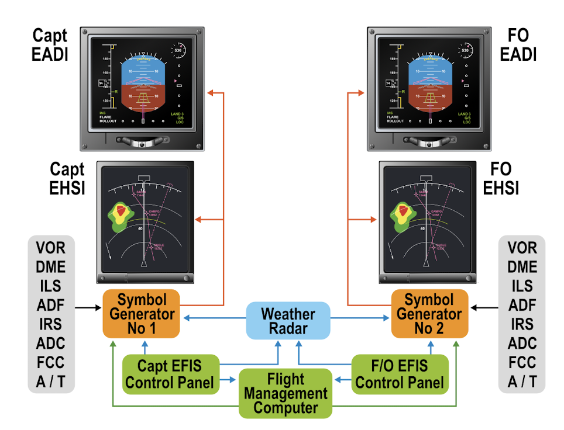
multi-crew EFIS installation consists of left (captain) and right system (first officer).
Each system comprises
Symbol Generator SG creates the graphic outputs for display on PFD and ND.
A third (centre) symbol generator can be incorporated. It may be used in the event of failure of either the right or left unit.
If 2 symbol generaturs are used and one fails, the remaining unit can supply both sides of the cockpit - but information would be the same.
Switching is pilot controlled.
If a dispaly unit fails, the PFD data can usually be switched to the ND or to any other available unit. This is done with the EFIS control panel.
Light aircraft use fewer displays, typically able to display both PFD and ND, and aircraft systems.
PFD or EADI is an electronic version of a sky pointing ADI.
Overlay by on basic attitude information
PFD presents a dynamic colour display of all parameters necessary to control the aircraft.
PFD principle: bringing all basic-T instruments in one display.
knitr::include_graphics("./figures/inst-PFD-B737.png")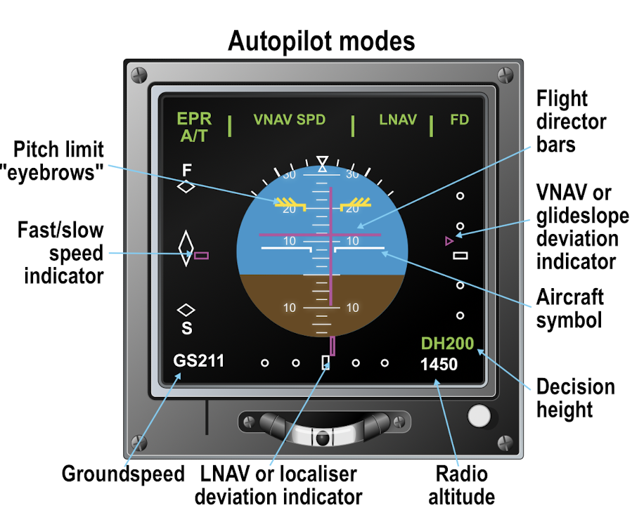
knitr::include_graphics("./figures/inst-PFD-A320.png")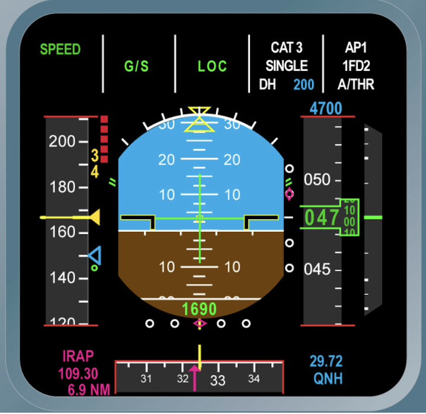
Note: fast/slow scale indicates airspeed error of -/+ 10kts when autothrottle and acts as throttle director when thrust is manually controlled.
Speed Tape shows Calibrated Airspeed (CAS) from air data computer, 42 … 420 kt.
Overlaid speeds are important for handling and performance characteristics.
maximum speed/Mach number (VMO or MMO)
high speed buffet boundary
minimum maneuver speed
stick shaker speed
minimum flap retraction speed shown as green “F”
landing reference speed VREF shown as green “R”
gear and flap placard speeds are shown in red and black
yellow ~ caution range
red and black ~ limits
V1 and VR are shown at top or bottom, if off scale
in B737 the set Decision Height (DH) can be supplemented with a digital or dial readout of the Radio ALtitude (RA).
The radio altimeter is active only below 2500ft.
Between 1000ft and 2500ft, both the radio height and decision height are shown in figures.
Below 1000ft, the display switches to white circular display = analogue dial readout graduated in 100ft increments - digital readout of height indicated in the center of the circle.
Decision Height is indicated as magenta at appropriate height.
Aural alert at 50ft above DH. … change to white and amber/flahs for a few seconds.
Reset button on control panel to inhibit flashing and reverts scale and marker to original colours.
B737 have DH/RA at bottom right or top right of PFD display.
A320 has DH at top right in a screen area designated ‘approach’ capabilities. It is in digirtal form, coloured in cyan (blue)
RA is shown at bottom center of attitude display. Green until 100ft above DH –> changes to amber, flashes for 3 seconds at DH + amber DH flag appears above RA.
Both B737/A320 are supported by automatic voice call outs of DH and RA during approach.
pitch limit eyebriws show the attitude to select in the event of a whind shear go-around or in response to a GPWS warning.
At this attitude the aircraft will climb just on the light buffet or more precisely: stick shker.
Autopilot modes are shown at top of the PFD in an area called the Flight Mode Annunciator (FMA).
Boeing uses a three column - two line display.
Airbus uses five columns - three line.
“armed modes”: Boeing ~ white, Airbus ~ cyan, until
“captured/engaged”: green
not all modes have “armed” state. For those using “armed”, change occurs when certain criteria are met, i.e.,
autothrottle controlling the thrust (EPR), FMS VNAV give guidance in pitch and limit the speed and FMS LNAV give guidance in roll.
If the autopilot is not coupled, guidance information is fed to the flight directors which show the aircraf is slightly below the required profile and on left of track.
flight director bars show where the centre of the aircraft symbol “SHOULD” be placed for the required flight profile.
An alternative EASI display for 737 uses a chevron shaped aircraft sympb
computers are pervasive.
A computer can be very simply defined as a machine for manipulating data according to a list of instructions.
Digital computers use semiconductors in integrated circuits to store and process information in binary form.
Data in –> input peripherals –> computer –> output peripherals –> data out
A computer has 6 basic features and capabilities. The von Neumann model calls for
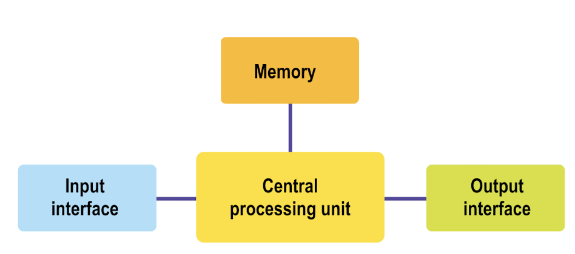
Computers have one or more CPUs.
CPU to execture the programmes stored in the memory by fetching the instructions, examining then, and then executing them in a sequential manner.
CPU task can be described as: fetch-decode-execute cycle.
CPU has 3 components
memory = to store programmes and data while the computer is operating, and - in some cases - when the computer is turned off.
If information does disappear when the power is off: volatile memory.
Two main types of memory are: RAM and ROM.
Most common form: Random Access Memory (RAM) ~ read/write memory.
Data in RAM can be changed easily while the computer is operating.
semiconductor RAM can be devided in 2 sub-categories:
Static RAM will hold information without being refreshed as long as the power is on.
Dynamic RAM needs refreshing every few milliseconds. DRAM ‘simplicity’ ~ allows four times the density of static RAM, but is slower to use than static RAM.
ROM - read-only memory; data stored in a chip that cannot be erased intentionally or otherwise. Used for start-up programmes and standard mathematical routines.
PROM - programmable read-only memory; can be programmed once into a “blank” chip making manufacture easier.
EPROM - erasable programmable read only memory; chips to be re-used after a (lengthy) erasing process.
input interface = convert input data from a format that humans can use to something the computer can use.
example: CDU keyboard of a FMC –> information going in is analogue, and it must be converted to digital data for the computer. This involves an analogue / digital conversion at the input interface.
Output interface use (often) a digital/analogue conversion to change computer data into human readable data. A CDU dispaly screen on a FMC converts digital into graphical information.
….. binary 0-1
64-bit binary
decimal system: the greater the number of digits available, the greate ther range of numbers we can display
==> 4 digits available –> 10.000 numbers, i.e., from 0000 to 9999
binary equivalent to 9999 uses 14 digits
==> 64-bit computer uses binary code with 64 digits
==> each instruction could be one of (2^64 - 1) possibilities.
hexadecimal
==> more compact form; hexadecimal uses based 16 (16 possibilities for each bit)
machine code
computer languages can be written in humanfriendly format - then converted into hexadecimal or binary machine code.
rule of machine code are particular to every CPU and dependent on CPU architecture.
Thus, machine-code written for on CPU not ‘portable’ to another type of CPU.
assembly - conversion computer programme to machine code
assembler - utility software used to carry out the assembly process.
assembly languages
low-level vs high-level languages
high-level languages: Java, C++, or C#
programmers will (still) use assembly languages when dealing with mission-critical systems often running on embedded devices.
example: automatic braking system, flight control systems.
Thus, assembly language
abstraction ~ degree to which a (computer) language uses easily understood phrases.
A language may use a term to describe a process, but the way that process is implemented by the computer is hidden from the programmer.
low-level: to display something on the screen: programmer needs to specify what to display and how the item should look (colours, fonts, …)
high-level: it is not necessary to specify how to go about displaying somethig on a screen.
The amount of abstraction defines how “high-level” a programming language is.
reminder: assembly = low-level language.
files produced in high-level languages must be converted before they can be used by a computer. This process is called ‘compiling’.
a.) 2 steps: high-level language –> assembly language –> abstracted in machine code b.) 1 step: directly compiled to machine code.
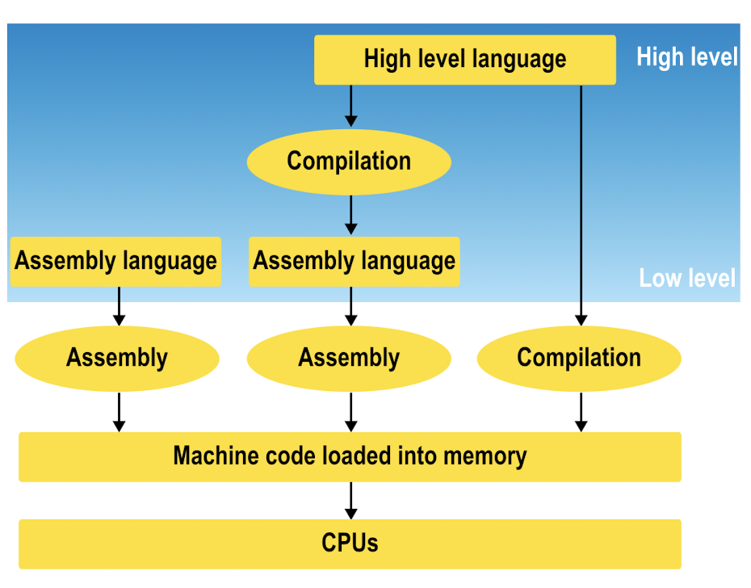 scripting languages
scripting languages do not undergo similar conversion to produce a file wihch can run on a computer.
Scripts are sets of instructions which are interrogated by other software.
E.g. website pages with embedded scripts (possibly Javascript) – the browser interrogates the webpage that contains the script(s).
Two way communication between browser and script:
script give instructions to browser or data based in the information passed to the script by the browser.
E.g. webpage recognising country you are in.
ASP, Javascript, Perl, Python
Computers on an aircraft would be useless, if they were unable to communicate with each other.
The approach used is to connect them using ‘computer buses’.
Latin ‘omnibus’ meaning ‘all together’.
Computer buses may be
Early systems used ‘daisy chaining’ = data passed through each part of the system to reach its destination.
Example of a data bus on a modern aircraft is the controller aera network CANBUS.
Originally from automobile industry, adopted by Airbus for the A380.
CANBUS connects all of the electronic control units involved in a group of functions by serial connections.
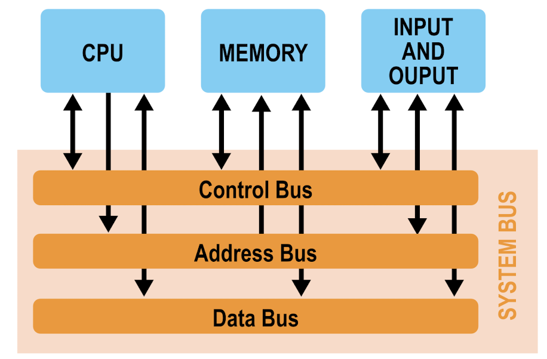
software certification.
Operating systems are termed ‘multi-tasking’ as they allow more than one programme to run at the same time. –> actually sequentially = software solution
Not to be confused with ‘multi-processing’ ~ more than one processor (2 or more CPUs) are used to operate a single computer programme. = hardware solution
Multi-processing is the case for most airborne systems (some multi-tasking) ~ safety back.
Differnt parts of the aircraft may use variations of operating systems.
The FMS is a much bigger type of OS than - for example - the ATSU which has far fewer functions to handle.
Simple systems, e.g. Air Data Computer ADC, only has to execute a relatively simple mathematical functions such as deriving SAT from TAT.
Flight safety regarding computer software and electronic documentation on aircrafr is certified under EROCAE standards.
ED-12B “Software Considerations in AIrborne Systems and Equipment Certification” details requirements for software planning development and safety.
Note: software is never certified as standalone entity. Respective hardware is also considered.
The idea of system safety is crucial to how the regulation within E12B used to certify airborne equirments.
5 levels oare defined
failure software catastrophic A hazardous B major C minor D no-effect E
an aircraft with fly-by-wire flight controls is computer controlled. failur of the software would be catastropic. Software level ‘A’ is defined as meaning that failure woud result in the loss of ability to continue safe flight and landing.
Failure at level C, C, D would increase crew workload and reduce operational taksinging of the aircraft - but would not prevent safe flight.
e.g. failure of FMC.
Failure of level E software would have no effect on operations or pilot workload.
e.g. in-flight entertainment equipment.